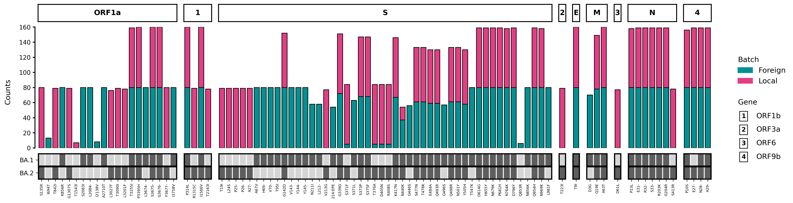

Quickstart
Example
If you wish to get started immediately, install VARGRAM (pip install vargram). Then, run either of the following code snippets on a Jupyter notebook or as a Python script. The code below downloads test data from the VARGRAM repo and does not require Nextclade CLI.
The following is the simplest way to generate a mutation profile with default settings:
# Import main VARGRAM module and module to download external data
from vargram import vargram
from vargram.data import example
# Download test data into directory called test_data
# Directory is created if it does not yet exist
example.get('test_data')
# Generate the mutation profile
vg = vargram(data='test_data/analysis/omicron_analysis_cli.tsv') # Provide data
vg.profile() # Tell VARGRAM you want to create a mutation profile
vg.show() # Show the figure
vg.save("default_profile.png", dpi=300) # Save the figure

The profile consists of several barplots stacked together; there is one barplot per mutated gene (gene name is shown in rectangular box just above the barplot). The x-axis of each barplot shows the amino acid mutations (substitutions, deletions, and insertions) in the corresponding gene and the y-axis shows either the raw number ("counts") or the proportion ("weights") of sequences with those mutations. The bars are colored per sequence batch.
By default, the batch labels in the legend are the filenames of the provided FASTA files or my_batch if a raw Nextclade analysis CSV file is provided instead. In the above example, the file omicron_analysis_cli.tsv is a concatenation of two Nextclade analysis files with an added batch column, which VARGRAM reads (see tutorial for specifying batch column and other features). Some gene names may be too long to fit within the label above its corresponding bar plot. In which case, the gene name is replaced with a number and a legend is automatically created for it.
How are the weights calculated?
When multiple batches are detected, the y-axis shows the weighted count of a mutation by default. Per batch, the weight of a mutation is defined as its count (no. of occurences) in the batch divided by all mutation counts in the same batch. Thus, a mutation E156G having a weight of 3 in a batch means that 3% of all mutation counts in that batch are E156G mutations.
This choice was made so that two batches with different number of samples can still be compared. The y-axis can be changed to show raw counts even if there are multiple batches.
Why are the genes not ordered?
By default, the genes are shown based roughly on the no. of mutations it has and these genes are then packed to maintain a rectangular aspect ratio. To get a profile with ordered genes, a genome annotation file must be provided. A horizontal layout of the barplots can also be specified.
To get a more interesting figure, run the following instead which modifies the labels and the colors, among other things, and adds key mutation heatmaps for reference:
from vargram.data import example # Import module for downloading external data
example.get('test_data') # Download test data into directory called test_data
vg = vargram(data='test_data/analysis/omicron_analysis_cli.tsv') # Provide data
vg.profile(threshold=5, # Set minimum count for a mutation to be included
ytype='counts') # Set y-axis to show raw count
vg.aes(stack_title='Region', # Change batch legend title
stack_label=['Foreign', 'Local'], # Change batch names
stack_color=['#009193', '#E33E84']) # Change batch bar colors
vg.key('test_data/keys/BA1_key.csv', label='BA.1') # Show key mutations of BA.1
vg.key('test_data/keys/BA2_key.csv', label='BA.2') # Show key mutations of BA.2
vg.show() # Show the figure
vg.save("modified_profile.png", dpi=300) # Save the figure
When key mutations are provided, heatmaps are created below each barplot that marks the mutations (dark gray) belonging to those keys. Each row of the heatmap corresponds to the mutations of one key file. A mutation that is present in a key file will always be included in the x-axis even if that mutation is not found in any of the batches of sequences; in that case, an empty column will be shown on the barplot.
How does the threshold work?
The threshold is applied per batch. It sets the minimum count of a mutation in a batch for it to be included. If a mutation meets the threshold in at least one batch, it will be included in the figure as a mutation of that batch but it won't show up in the other batches even if the count is nonzero.
What are key mutations?
In VARGRAM, key mutations are mutations that will be marked in the mutation profile through a heatmap below the barplots. These key mutations may be co-occuring mutations of a variant or lineage, or just mutations of interest for whatever reason. These are helpful for comparing the batches against a reference set of mutations.
In addition, you can force the mutation profile to have a horizontal layout. You can also order the genes by providing an annotation file in GFF3 format:
from vargram import vargram # Import main module
from vargram.data import example # Import module for downloading external data
example.get('test_data') # Download test data into directory called test_data
vg = vargram(data='test_data/analysis/omicron_analysis_cli.tsv', # Provide data
gene='test_data/sc2.gff') # Provide annotation file
vg.profile(threshold=5, # Set minimum count for a mutation to be included
ytype='counts') # Set y-axis to show raw count
vg.aes(stack_title='Region', # Change batch legend title
stack_label=['Foreign', 'Local'], # Change batch names
stack_color=['#009193', '#E33E84'], # Change batch bar colors
order=True, # Order the genes based on the annotation file
flat=True) # Force a horizontal layout
vg.key('test_data/keys/BA1_key.csv', label='BA.1') # Show key mutations of BA.1
vg.key('test_data/keys/BA2_key.csv', label='BA.2') # Show key mutations of BA.2
vg.show() # Show the figure
vg.save("ordered_flat_profile.png", dpi=300) # Save the figure
# Gene map (genome annotation) of SARS-CoV-2 in GFF format.
# For gene map purpses we only need some of the columns. We substitute unused values with "." as per GFF spec.
# See GFF format reference at https://www.ensembl.org/info/website/upload/gff.html
# seqname source feature start end score strand frame attribute
. . gene 26245 26472 . + . gene_name=E
. . gene 26523 27191 . + . gene_name=M
. . gene 28274 29533 . + . gene_name=N
. . gene 266 13468 . + . gene_name=ORF1a
. . gene 13468 21555 . + . gene_name=ORF1b
. . gene 25393 26220 . + . gene_name=ORF3a
. . gene 27202 27387 . + . gene_name=ORF6
. . gene 27394 27759 . + . gene_name=ORF7a
. . gene 27756 27887 . + . gene_name=ORF7b
. . gene 27894 28259 . + . gene_name=ORF8
. . gene 28284 28577 . + . gene_name=ORF9b
. . gene 21563 25384 . + . gene_name=S
Below is the result: 
The ordering of the gene barplots are based on the start column in the annotation file.
Basic syntax
VARGRAM has a declarative syntax that makes it is easy to declare what you want to see in the figure. Every VARGRAM script starts by importing the class vargram from the package:
from vargram import vargram # Importing vargram class
What is a class?
A class is a template for creating an object. To use an analogy, a class is like a blueprint for a car (the object) that has attributes like color and functions (called methods) like driving or windshield wiping. An instance of a class is a built object like a Sedan or an SUV.
The vargram class contains all the methods needed to generate the VARGRAM figure and corresponding summary data. Typically, you would get an instance of the class by defining a variable like vg in the example below. Methods can be accessed by appending .method_name() to the variable, e.g. vg.profile().
A mutation profile can then be generated in just three lines of code:
vg = vargram(seq='path/to/<samples-directory>', # Provide sample sequences
ref='path/to/<reference.fa>', # Provide reference sequence
gene='path/to/<annotation.gff>') # Provide genome annotation
vg.profile() # Tell VARGRAM you want to create a mutation profile
vg.show() # And show the resulting figure
vg = vargram(data='path/to/<analysis.csv>'), # Provide Nextclade analysis file (CSV or TSV)
vg.profile() # Tell VARGRAM you want to create a mutation profile
vg.show() # Show the resulting figure
vg.stat()
vg.save('<my_vargram_figure>.jpg')
vg.save('<my_vargram_data>.csv')
Switching the order of show(), save(), and stat()
VARGRAM is built on Matplotlib and you may see some similarities in terms of syntax. But you may interchange show() and save() with no worries. In fact, you can save the figure without calling show() or save the summary data without calling stat(). They are all independent of each other but must be called after profile() (see section below about VARGRAM methods).
VARGRAM methods
Types
Broadly, the vargram class has three main types of methods: (1) "plot", (2) "aesthetic" and (3) "terminal" methods. The plot methods determine what type of figure will be generated. At the moment, there's only one plot method, profile(), for generating mutation profiles.
Aesthetic methods like aes() can be used to modify figure characteristics such as labels and colors but other aesthetic methods like key() can also be used to add data aside from the sequence files.
Finally, terminal methods like show(), stat(), and save() produce an output like a generated image, a dataframe, or saved file.
Optional methods
All aesthetic methods are optional. However, a plot method and at least one terminal method are required to be called in order to produce an output. A vargram instance must always be defined in order to call these methods.
Order
The methods should be called in order of their types and form a PAT or PT sandwich. Plot methods go first, followed by Aesthetic methods, and the Terminal methods are called last:
# An instance is defined prior
vg = vargram(data='path/to/<analysis.csv>')
# *** one plot method ***
vg.profile()
# *** aesthetic methods ***
vg.aes(color=['red','blue'])
vg.key('<my_key>.csv')
# *** terminal methods ***
vg.save('<my_vargram_figure>.pdf')
vg.show()
vg.key() can go first before vg.aes() or vg.show() can be called first before vg.save().
The following examples will not produce an output:
vg = vargram(data='path/to/<analysis.csv>')
vg.show()
vg.profile()
vg.aes(stack_title='Region')
vg = vargram(data='path/to/<analysis.csv>')
vg.key('<my_key>.csv')
vg.show()
vg.profile()
vg = vargram(data='path/to/<analysis.csv>')
vg.save('<my_vargram_figure>.png')
vg.key('<my_key>.csv')
vg.profile()
The following examples will produce an output but the indicated methods will be ignored because they are not inside the PAT or PT sandwich:
vg = vargram(data='path/to/<analysis.csv>')
vg.save('<my_vargram_data>.csv') # Ignored
vg.profile()
vg.show()
vg = vargram(data='path/to/<analysis.csv>')
vg.profile()
vg.show()
vg.key('<my_key>.csv') # Ignored
You can make more than one PAT sandwich:
vg = vargram(data='path/to/<analysis.csv>')
# PAT sandwich no. 1
vg.profile()
vg.aes(stack_color=['red', 'blue'])
vg.show()
vg.save()
vg.key('<my_key>.csv') # Ignored, not inside a PAT sandwich
# PAT sandwich no. 2
vg.profile()
vg.aes(stack_color=['orange', 'blue'])
vg.show()
vg.save()
vg1 = vargram(data='path/to/<first_analysis.csv>')
# PAT sandwich no. 1
vg1.profile()
vg1.aes(stack_title='Collecting Institution')
vg1.show()
vg2 = vargram(data='path/to/<second_analysis.csv>')
vg2.profile(threshold=20) # Ignored, only one plot method per sandwich--the latest plot method called before the first terminal method
# PAT sandwich no. 2
vg2.profile()
vg2.key('<my_key>.csv')
vg2.show()
Why is it like this?
Internally, the plot and aesthetic methods only capture their respective inputs and do nothing else. The terminal methods capture their respective inputs, trigger VARGRAM to process the data, and produce their respective outputs.
The first terminal method called in the sandwich notes the latest plot method before it and all other aesthetic methods (if there are any) inside the sandwich. Then, the data is processed accordingly. This is why all other methods outside the sandwich are ignored. Once the data is processed, all the respective outputs (e.g. generated figure, saved data, etc.) of the terminal methods in the sandwich are produced.